TreeNet
Discover and learn about interesting creatures that roam our natural world.
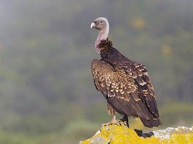
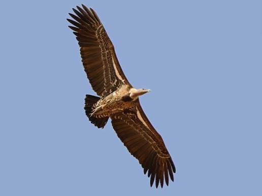
| Type | Flying,Steel |
|---|---|
| Height | 90cm |
| Weight | 8kg |
Large vultures inhabiting the Sahel region of Africa. Listed in the Guinness World Records as the highest-flying bird in the world, with a documented instance of a mid-air collision with an aircraft at 11300m altitude. Acts as the ecosystem cleanup crew, consuming carcasses and preventing the spread of disease
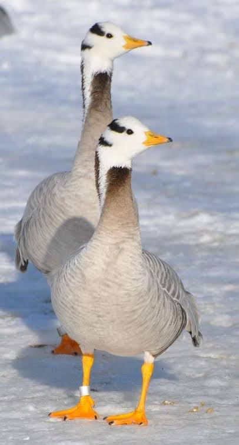
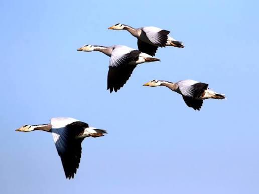
| Type | Flying,Normal |
|---|---|
| Height | 73cm |
| Weight | 2.5kg |
A migratory bird characterized by two distinct black stripes on the back of its white head. Easily traverses the Himalayas at an altitude of 7,000m, where oxygen is extremely scarce. Under the cover of a night sky where the air grows cold, I conserve my energy by navigating the terrain between mountain peaks.
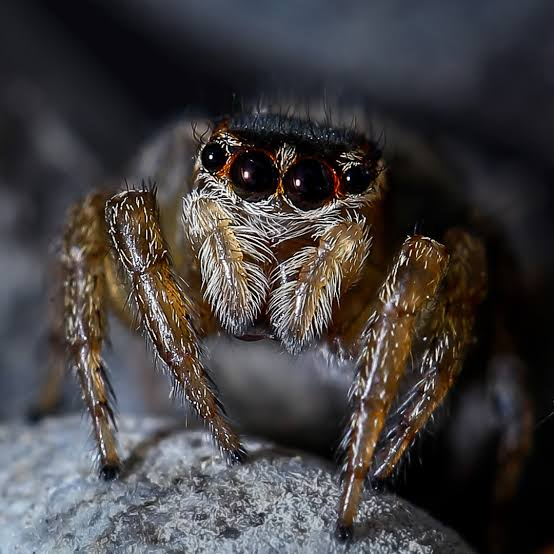
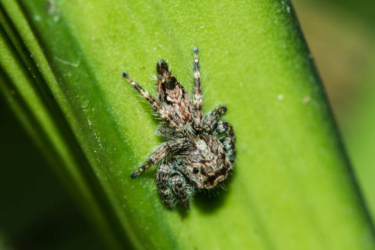
| Type | Bug,Rock |
|---|---|
| Height | 5mm |
| Weight | Few milligram(not measured) |
A tiny spider that makes its home at the highest point on Earth. Lives hidden away in the cold crevices of Mount Everest, at an altitude of 6,700m. When the sun shines, they climb onto rocks to warm their bodies; instead of spinning webs, they use their large eyes to spot prey and pounce with a swift leap.
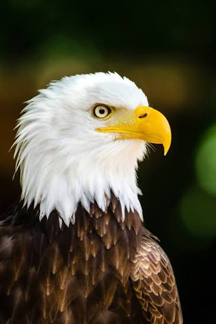
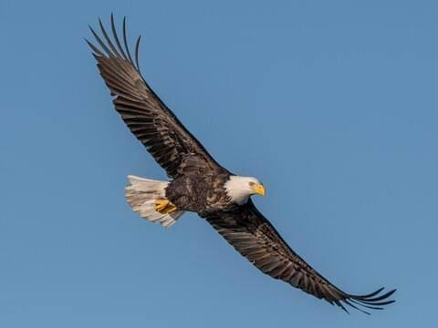
| Type | flying,fighting |
|---|---|
| Height | 85cm |
| Weight | 4kg |
A bird of prey, distinguished by the striking contrast between its snow-white head and dark brown feathers. With its exceptional eyesight, it can precisely spot prey from several kilometers up in the sky. It glides low over the waters surface, snatches a salmon from the depths with its razor-sharp talons, and subdues its catch using its powerful jaws and beak.
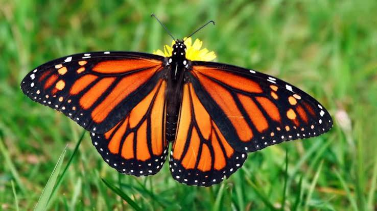
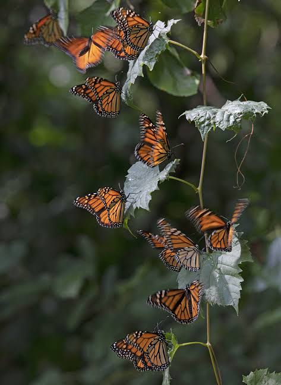
| Type | bug,flying |
|---|---|
| Height | 3cm |
| Weight | 0.5g |
A beautiful butterfly with striking orange wings bordered in black. As winter approaches, it embarks on a massive migration, traveling over 4,000 kilometers to reach the warm forests of Mexico. During its caterpillar stage, it feeds on toxic milkweed leaves, absorbing poisons into its body; its vibrant wing patterns serve as a warning to predators that it is toxic.
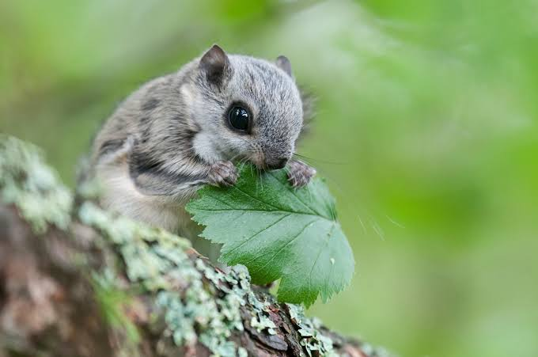
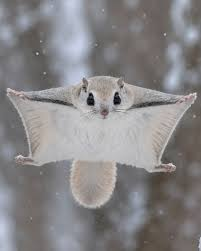
| Type | normal,flying |
|---|---|
| Height | 15cm |
| Weight | 100g |
A nocturnal squirrel with large, round, black eyes and soft fur. It spreads the thin membranes or patagia stretching between its forelimbs and hindlimbs to glide smoothly for tens of meters from tree to tree. By skillfully steering with its tail, it manages to evade natural predators like owls and weasels. During the day, it curls up inside a hollow in an old tree to sleep and conserve its energy.
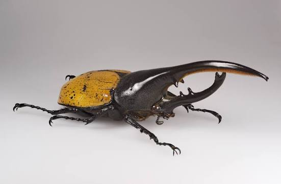

| Type | bug,fighting |
|---|---|
| Height | 18cm |
| Weight | 70g |
The largest and most powerful beetle in the world. It possesses immense physical strength, easily lifting objects dozens of times its own body weight. It uses its two massive horns to hoist opponents into the air and hurl them away; it also has the mysterious ability to change the color of its carapace from yellowish-brown to black depending on the surrounding humidity.
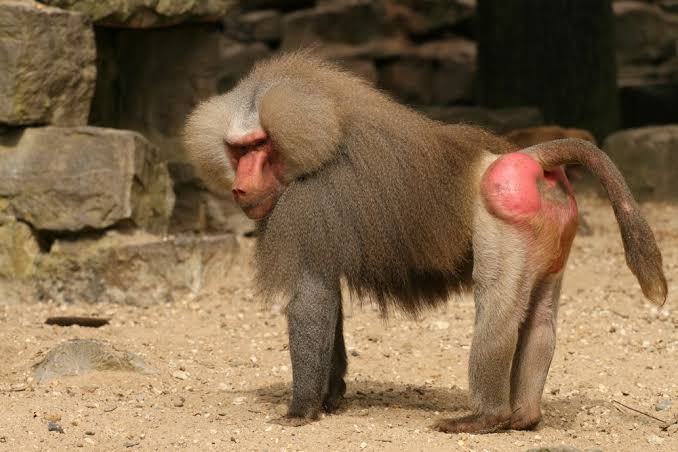
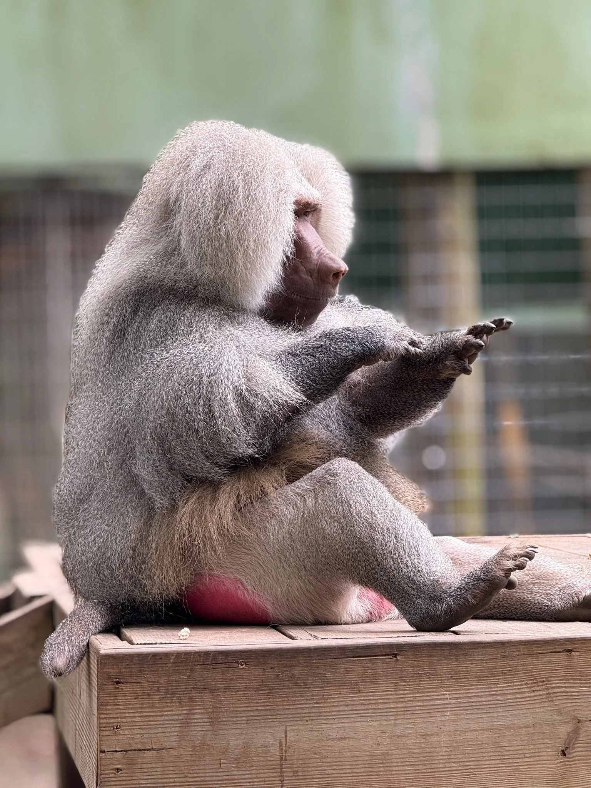
| Type | normal,fighting |
|---|---|
| Height | 90cm |
| Weight | 25kg |
A primate with a long, dog-like snout and sharp fangs. They roam grasslands and rocky terrain in large troops numbering in the dozens. When a predator appears, the leaders of the troop take the forefront, howling loudly and baring their massive fangs to intimidate the intruder. With their sturdy limbs, they scale rocky mountains with ease, feeding on anything from fruits to small animals.
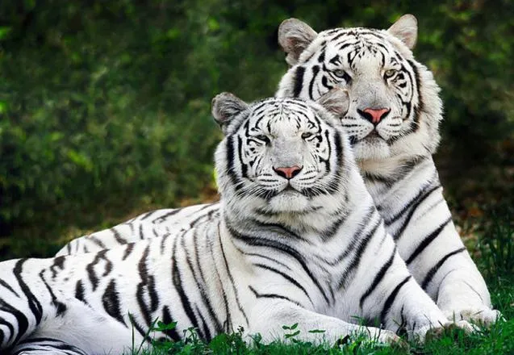
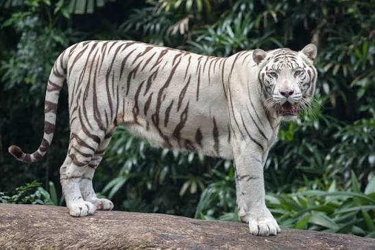
| Type | ice,fighting |
|---|---|
| Height | 180cm |
| Weight | 185kg |
A legendary predatory animal, it possesses a coat of pure white fur marked with deep black stripes, complemented by ice-blue eyes. Born as a result of an extremely rare genetic mutation, it has long been revered as a sacred creature that guards the west. With its heavy, powerful forepaws and razor-sharp claws, it can subdue its prey in an instant; even amidst a raging blizzard, it tracks its quarry with complete stealth, leaving no trace of its presence.
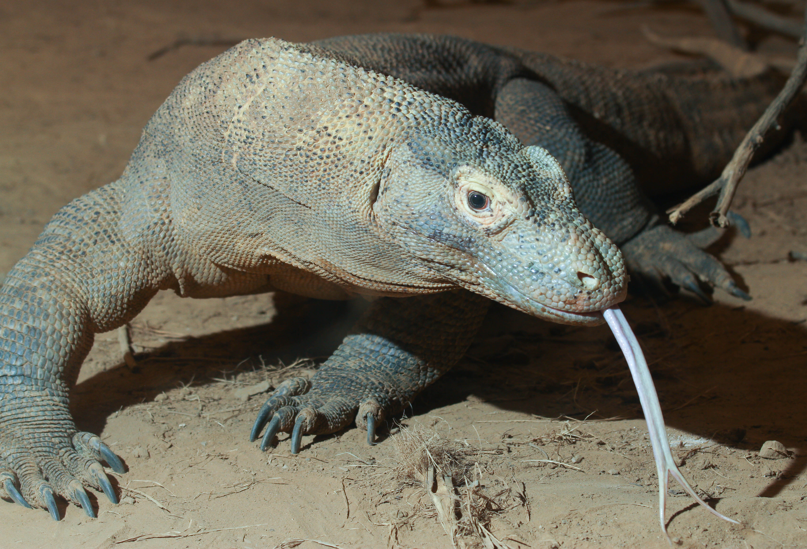
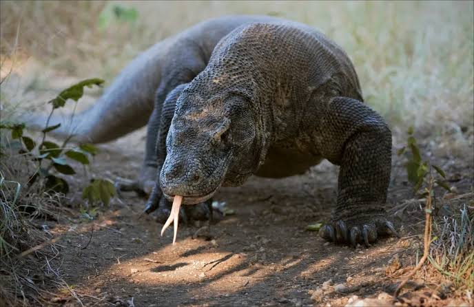
| Type | poison,dragon |
|---|---|
| Height | 2.5m |
| Weight | 80kg |
The largest lizard on the planet. It possesses a massive body covered in tough scales and a heavy tail; it flicks its forked yellow tongue to track the scent of prey from several kilometers away. Once it bites its target with its sharp teeth—delivering venom from glands in its lower jaw—it relentlessly pursues the prey until the poison takes effect and the creature collapses, at which point it devours it.

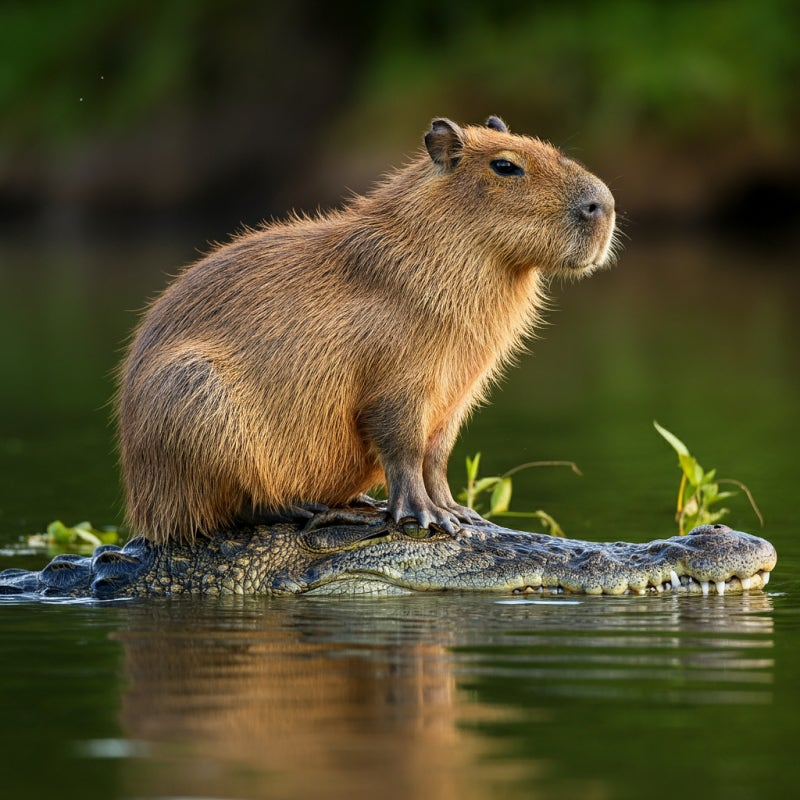
| Type | normal,water |
|---|---|
| Height | 60cm |
| Weight | 50kg |
The largest rodent on the planet. With its consistently calm expression and gentle nature, it puts even other species at ease, drawing them near. It uses the webbing between its toes to swim skillfully through the water; if a predator appears, it will submerge itself leaving only the tip of its nose above the surface and hold its breath for minutes at a time to remain completely undetected.
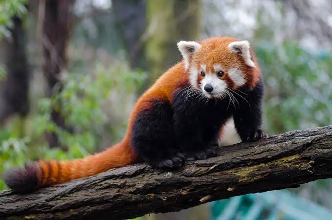
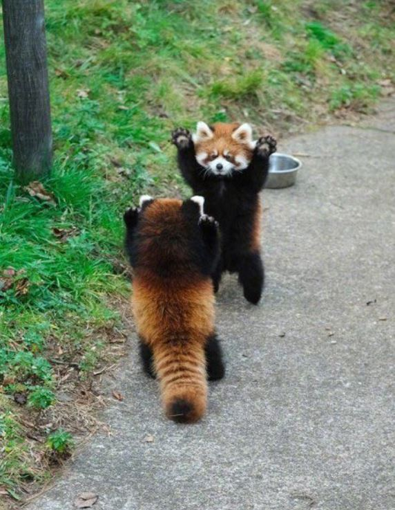
| Type | normal,grass |
|---|---|
| Height | 60cm |
| Weight | 8kg |
Features flame looking-red fur and a bushy, striped tail. It primarily inhabits bamboo forests in high-altitude mountainous regions, using its sharp claws and specialized forelimb bones to skillfully climb trees. When it feels threatened, it stands on its hind legs and raises its arms high to make itself appear larger an attempt to intimidate its opponent that often backfires, as the display ends up being far too adorable.
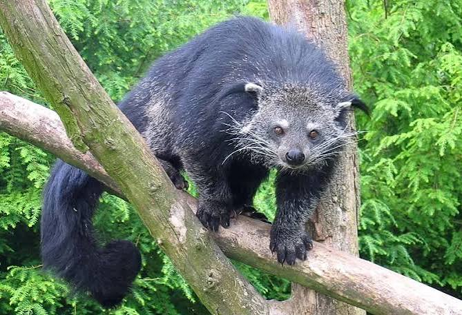
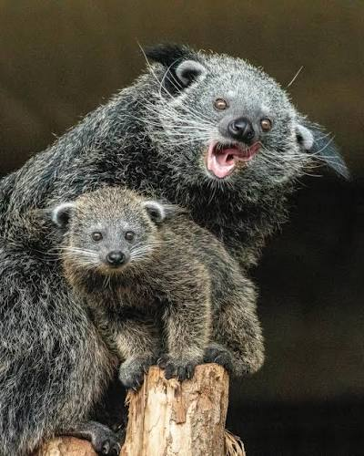
| Type | normal |
|---|---|
| Height | 80cm |
| Weight | 16kg |
A mysterious animal with a coarse, black fur of a bear and the face of a cat. It spends most of its life in the trees of dense tropical rainforests, using its long, muscular tail like a fifth limb to grip branches and move about with ease. It marks its territory by emitting a scent identical to that of freshly popped, buttery popcorn, and roams the forest at night in search of sweet fruit.
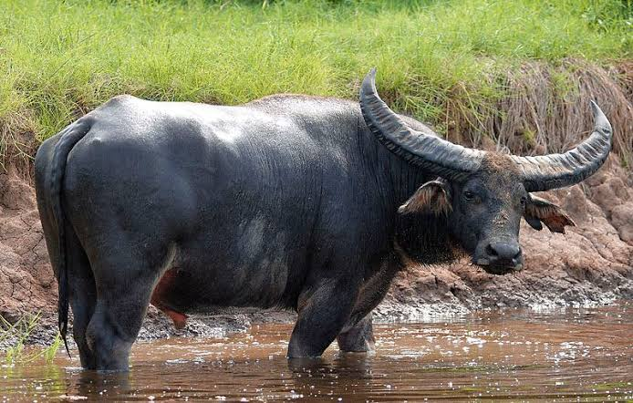

| Type | water,ground |
|---|---|
| Height | 160cm |
| Weight | 800kg |
Features a pair of massive, crescent-shaped horns and dark gray skin. True to its name, it has a great fondness for water and mud; during the heat of the day, it cools off by submerging itself in rivers and takes mud baths to ward off pests. Its broad hooves allow it to walk with ease across deep swamps or muddy rice paddies. While it may appear docile, it will charge fiercely when angered—using its immense body weight and colossal horns as formidable weapons.
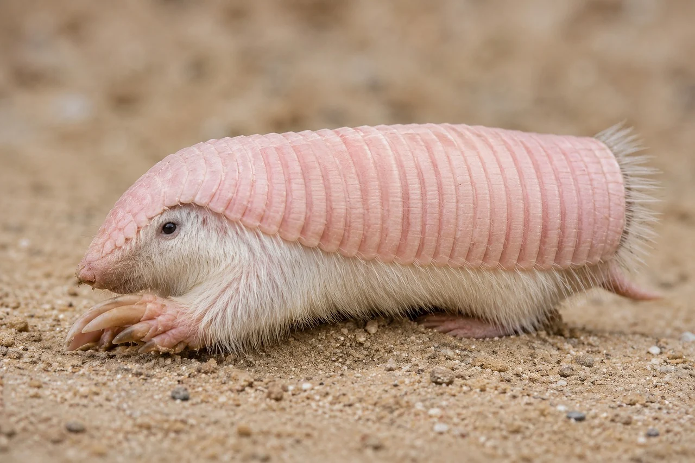
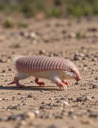
| Type | fairy,ground |
|---|---|
| Height | 30cm |
| Weight | 120g |
A rare animal that is the smallest of all armadillo species, characterized by its soft, white fur and a pinkish carapace. It uses the massive claws on its forelimbs to rapidly dig into sandy ground and conceal itself. When it senses a threat, it plugs the entrance to its burrow with the hard, flat, pink-colored shield located on its hindquarters, completely blocking any intruders from entering.
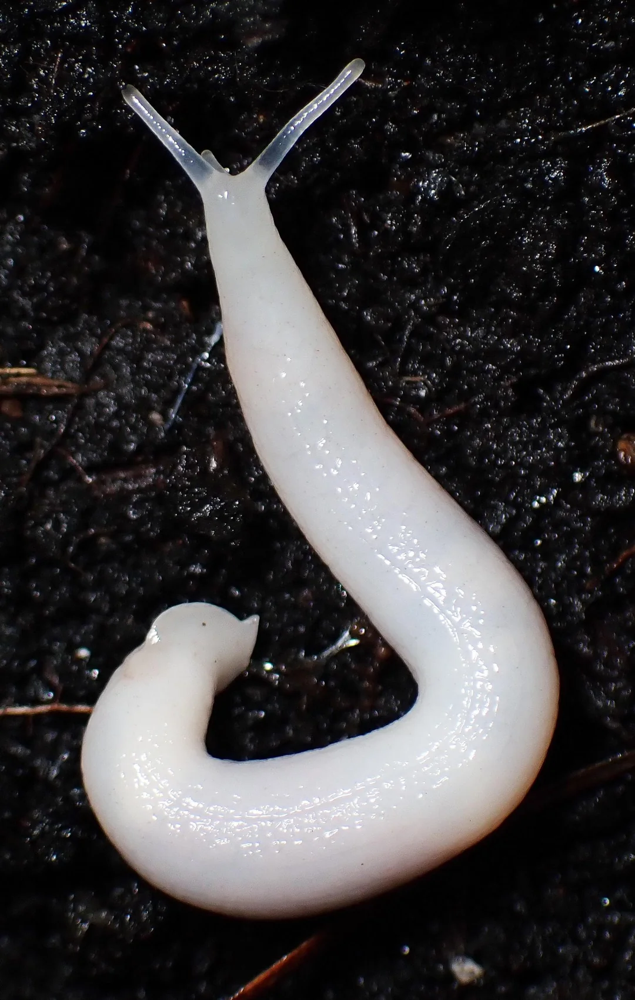
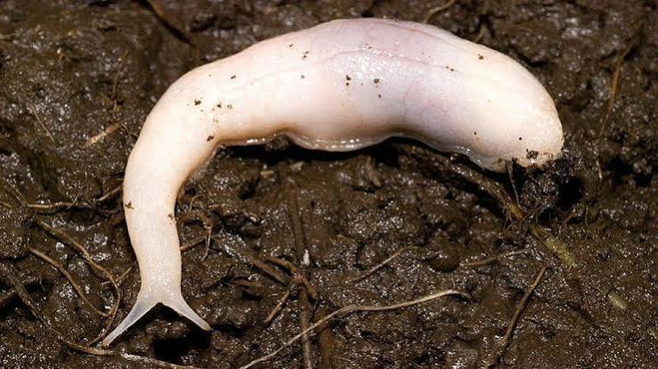
| Type | ghost,ground |
|---|---|
| Height | 8cm |
| Weight | few grams(not recorded) |
A mysterious slug with a ghostly, deathly-pale complexion and vestigial eyes. It typically resides in the cool earth one meter underground, emerging to the surface only under the cover of night. Unlike common slugs that feed on vegetation, this species is carnivorous and possesses razor-sharp teeth; it navigates through narrow subterranean tunnels with ease, hunting earthworms by slurping them up in an instant—much like eating a strand of noodles.
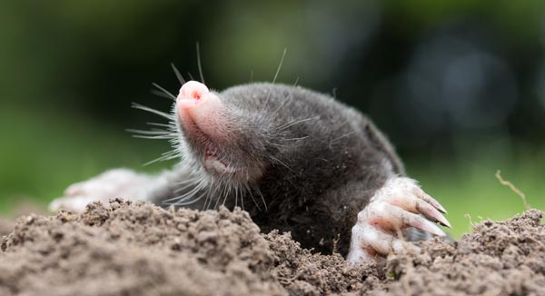
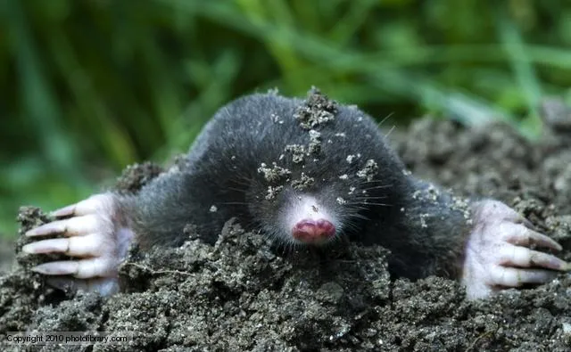
| Type | ground |
|---|---|
| Height | 15cm |
| Weight | 120g |
A subterranean animal with broad, powerful forepaws that function like shovels. Having adapted to life in the dark underground, its eyes have degenerated; however, it uses a highly sensitive nose to precisely detect minute vibrations and the presence of prey. It spends the vast majority of its life navigating a labyrinth of tunnels 10 to 50 centimeters beneath the surface, constantly searching for earthworms and insects to satisfy its voracious appetite.
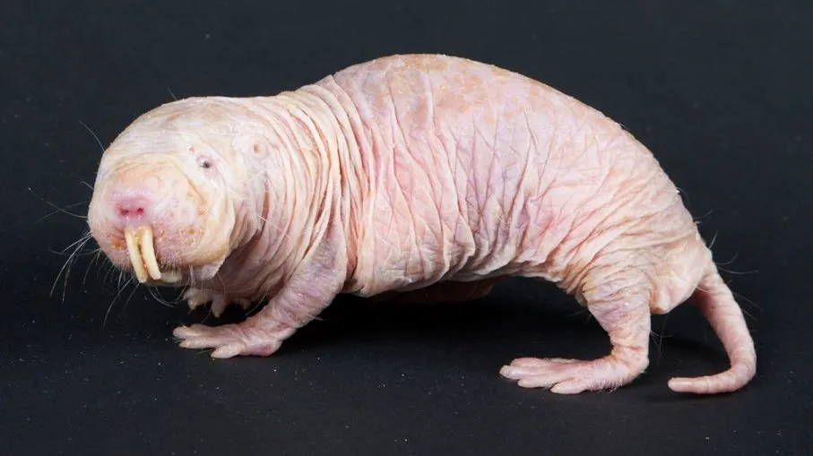
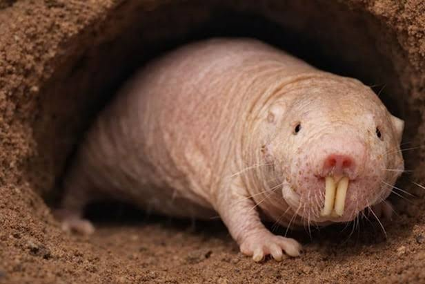
| Type | ground,normal |
|---|---|
| Height | 10mm |
| Weight | 35g |
A mysterious animal with hairless, pinkish skin and large front teeth. Much like ants or bees, they live in colonies centered around a queen—consisting of up to several hundred individuals—within vast, labyrinthine tunnel systems 1 to 1.25 meters underground. They are capable of breathing with ease even deep beneath the earth where oxygen is extremely scarce, and they possess an extraordinary vitality that allows them to live for over 30 years without showing signs of aging.
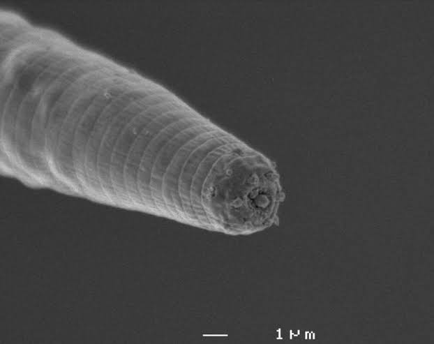
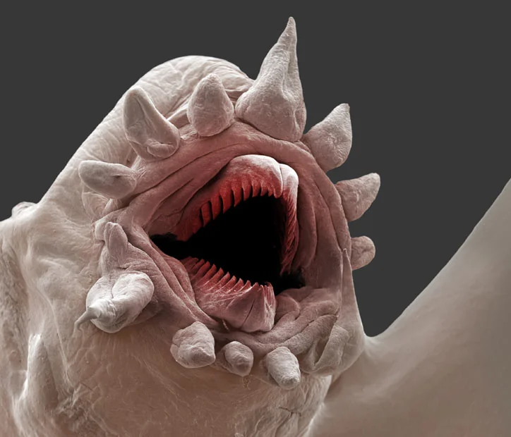
| Type | ground,fire |
|---|---|
| Height | 0.5mm |
| Weight | Less than a microgram (Not recorded) |
A legendary, minuscule, nematode that inhabits the deepest reaches of the Earth—deeper than any other multicellular animal. It lives 3.6 kilometers underground, dwelling within the groundwater that fills crevices in the bedrock, where it feeds on bacteria. In a realm of total darkness—devoid of both light and oxygen—it easily withstands scorching 37 C temperatures driven by geothermal heat, as well as crushing water pressure, reigning alone in the deepest depths of the planet.